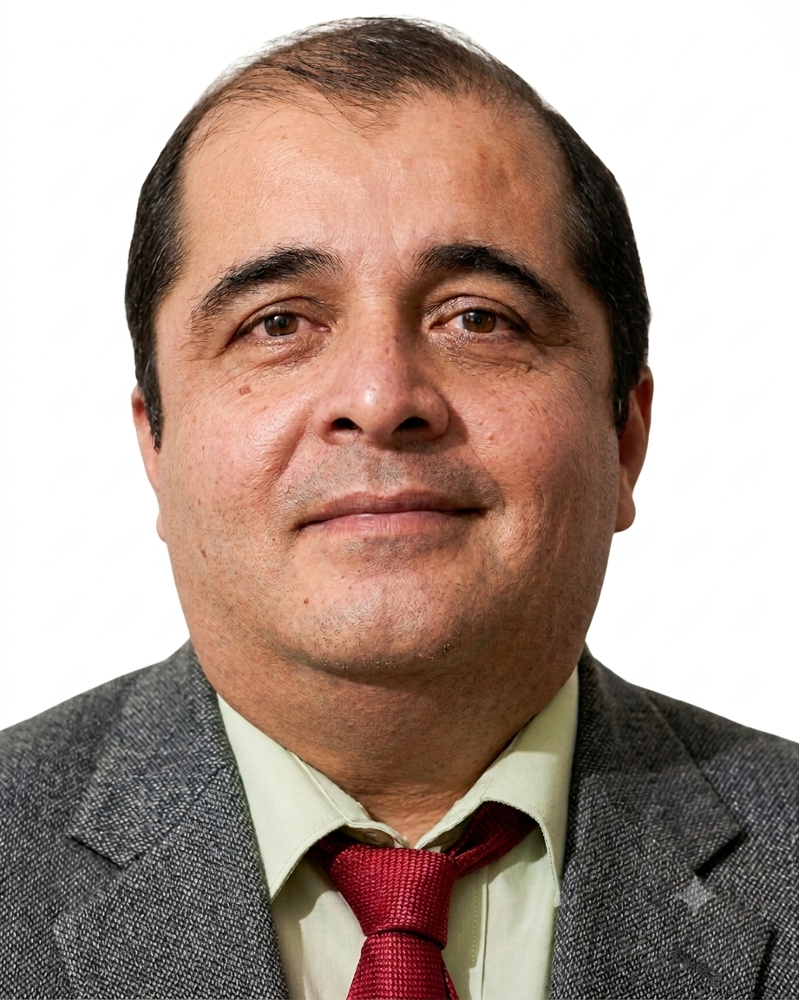

Ricardo Jaramillo Velasco — Ingeniero en Telemática, asesor de TI con más de 20 años de experiencia y Profesor por Asignatura en la Universidad de Colima. Especialista en integrar tecnología y metodologías activas para crear experiencias de aprendizaje de alto impacto.

Analista, desarrollador e implementador de soluciones de Tecnologías de la Información con sólida trayectoria en los sectores público y privado. A lo largo de mi vida profesional he cultivado una actitud de mejora continua y aprendizaje autodidacta, lo cual ha sido un valor agregado en cada proyecto en el que he participado.
Mi experiencia técnica de más de 13 años gestionando infraestructura y desarrollando aplicaciones me permite enseñar no solo la teoría, sino la aplicación real de la tecnología en entornos institucionales. Hoy, mi objetivo es transferir este conocimiento al aula, formando a la próxima generación de profesionales mediante pensamiento crítico, ciudadanía digital y adaptabilidad tecnológica.
Estoy listo para sumarme a instituciones educativas que busquen innovar su metodología de enseñanza mediante tecnología de vanguardia, inteligencia artificial y prácticas pedagógicas activas.
Formación avanzada en la gestión estratégica de tecnologías, innovación digital y transformación organizacional aplicable al ecosistema educativo.
Base sólida en redes, sistemas de información y arquitectura tecnológica que sustenta mi capacidad analítica y de resolución de problemas complejos.
"La integración de un perfil técnico sólido con una formación pedagógica actualizada permite no solo enseñar tecnología, sino inspirar a los estudiantes a convertirse en creadores de soluciones. Esa es la diferencia entre usar una herramienta y transformar un entorno."
Estoy disponible para conversar sobre oportunidades docentes en áreas de TI, Programación, Inteligencia Artificial o diseño de programas educativos. Respondo personalmente cada mensaje en un plazo máximo de 24 horas.
Enviar un correo ahora